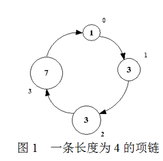
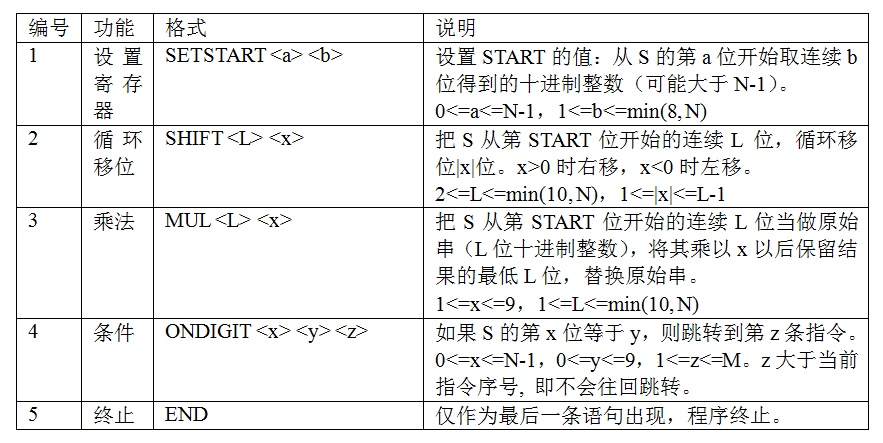

一条项链由N个珠子连接而成，编号依次为0, 1, 2, …, N-1。每个珠子的颜色用0~9之间的一位数字来表示（因此
，可用的颜色一共有10种）。一条长度为4的项链如下图所示：（圆圈中的数字表示颜色，圆圈旁边的数字为珠子
的编号）

需要注意的是，如图1所示，编号为0, 1, 2, …, N-1的珠子大小是依次递增的，设编号为i的珠子的颜色值为ai，
则数字序列a0a1…an-1可以唯一的表示一种项链。例如，图1所示的项链表示为"1337"。
现在有一台自动生产项链的机器，它的结构和工作方式如下所述：
机器的核心控制部件主要包括：一个CPU、一个整数寄存器START、和存储器S。
机器内部固化有一段程序，由CPU解释执行。该程序的输入是长度为N的十进制数字序列A，输出是另一个长度为N的
十进制数字序列B。每次执行程序前将S初始化为输入序列A；程序结束后把S作为输出串B。START初始化为0。
程序包含M条指令，顺序编号为1~M。指令共有5种，以下是指令的格式和功能：（尖括号<>表示指令参数，都是整数）

由于项链是环型的，因此第i位和第i+kN位（k为整数）代表数字序列的同一位置。例如当N=4时，第6位和第2位是等价的。
下面是一个程序的例子：
MUL 3 2
SETSTART 2 1
ONDIGIT 0 4 1
SHIFT 3 -2
END
机器启动的时候，输入一个数字串S0，执行程序得到一个新的数字序列S1并生产出S1代表的项链来，以后机器每生
产出一条新项链Sn，就把Sn对应的数字序列作为输入重新执行一遍程序，得到一个新的数字序列Sn+1并生产出新的
项链。由于长度为N的项链种类数目是有限的（至多10N种不同的项链），因此如果让机器一直工作下去，某些种类
的项链会被生产出无限多条。编程计算出这些将被无限生产出的项链有多少种。在本题中，可以被生产出来的项链
种类总数保证不超过10^6。